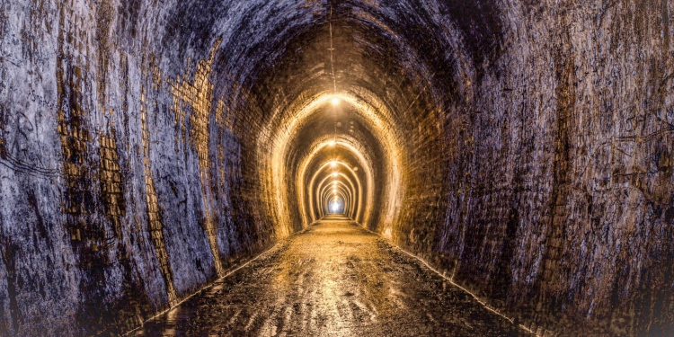

.png)
Madencilik Sanayi ve Ticaret A.Ş. değerli ve baz metaller konusunda işletmeleri, projeleri ve aramaları olan bir metalik madencilik grubudur.
Stratejimiz, potansiyel görülen maden sahalarında kalitemizden ödün vermeden doğaya, çevreye, insana saygılı olarak ileri düzeyde aramalar yaparak; ekonomik anlamda ve büyük çapta, ekonomik ve sosyal kalkınmanın çevre koruma ile bütünleştiği sürdürülebilir maden projeleri ile ülkenin önemli altın üreticileri arasında yer almaktır. Bu anlamda şirketimiz, bünyesinde birçok maden arama ruhsatı bulundurmaktadır.
Tüm işletmelerinde ve arama sahalarında, çalışanlarının sağlık ve güvenliğini sağlayarak, toplumla, paydaşlarıyla ve çalışanlarıyla karşılıklı güven içinde, değerlere ve çevreye saygılı, şeffaf, açık, dürüst, yönetim anlayışı ve iletişimle, kalıcı ve ekonomik getirisi yüksek, sürdürülebilir altın madenciliği hedeflemektedir.
Tüm maden işletmeleri ve projelerimiz; İSG, Çevre, Toplum İlişkileri, Kalite ve Entegre Yönetim sistemlerinin tüm bileşenleri ile ulusal ve uluslararası standartları içermesi nedeniyle, en iyi uygulanabilir teknolojilere sahiptir.
Madencilik faaliyetleri başlamadan önce, hava, su, toprak kalitesi, bitki-hayvan türleri, kültürel ve sosyal varlıkla ilgili, uzmanlarca yapılan çalışmalar sonucu elde edilen temel veri ve bilgiler ışığında; üretim, doğaya yeniden kazandırma, süreçlerinde tüm çevresel ve sosyal değerler korunacaktır.
madencilik çalışması yapacağı yörelerde karşılıklı güvene dayalı, değerlere saygılı, açık ve şeffaf iletişimle, yöre halkının faaliyetlere desteğini sağlama amaçlı, sosyal onay, şikayet ve geri bildirim, paydaş katılımı, yerel satın alma yerel istihdam anlayışı ve yönetimiyle, çevreyi koruyarak ekonomik ve sosyal kalkınma sağlayacaktır